Replace DNS forwarder VMs with Azure DNS Private Resolver
A working simulation of the hybrid target design. The "on-prem" site runs in Indonesia Central (an AD DS + DNS server and a VPN gateway). Azure runs in Southeast Asia as hub-spoke (a VPN gateway and DNS Private Resolver in the hub, a VM and a Private Endpoint in the spoke). A site-to-site IPsec VPN connects the two, standing in for ExpressRoute.
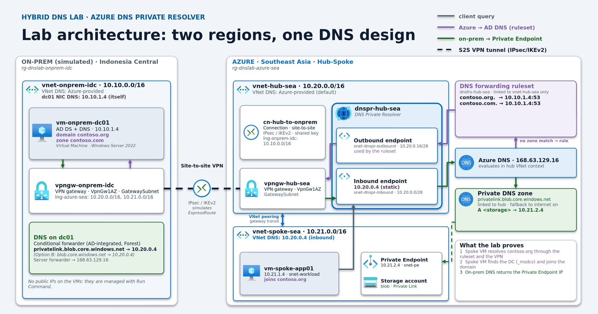
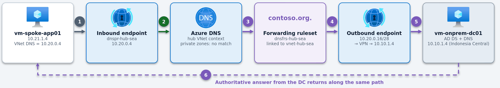
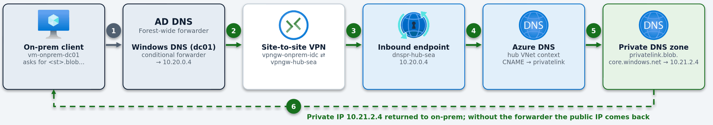
How the lab maps to the production design
| Production target design | This lab |
|---|---|
| On-prem data centre: AD DC + Windows AD DNS | vnet-onprem-idc (Indonesia Central) with vm-onprem-dc01: AD DS + DNS for contoso.org and contoso.com |
| ExpressRoute private peering | Site-to-site IPsec VPN, VpnGw1AZ ⇄ VpnGw1AZ (same DNS behaviour; only the transport differs) |
| Hub VNet with AD 1 / AD 2 as the first rule targets | No DCs in the lab hub. Rules target the on-prem DC, the production backup target, so the lab tests the hardest path: resolver → VPN → on-prem |
| Hub VNet DNS = the AD DCs | Hub VNet DNS = Azure-provided (the lab hub has no DCs; never the inbound endpoint) |
| Spoke VNets: DNS = inbound endpoint | Same: vnet-spoke-sea uses 10.20.0.4 |
| Private DNS zones linked to the hub | Same, shown with privatelink.blob.core.windows.net (plus fallback to internet, per the VPN Gateway FAQ) |
| Ruleset contoso.org. / contoso.com. → AD | Same rules, target 10.10.1.4:53, ruleset linked to the hub only |
| On-prem conditional forwarders → inbound IP (AD-integrated, Forest) | Same, on dc01, with both the privatelink zone (Option A) and the public zone (Option B) tested. Only Option B returned the private IP in this lab |
| DNS1 / DNS2 forwarder VMs | Not deployed. The lab starts in the target state. |
The lab uses its own address ranges (10.10.0.0/16, 10.20.0.0/16, 10.21.0.0/16) and is not connected to any customer network.
Before you start
- An Azure subscription where you can create resource groups, networks, VMs and gateways (Contributor or Owner).
- Azure Cloud Shell (Bash): Azure CLI 2.75.0 or later and Bicep (Cloud Shell has both; step 0 upgrades Bicep).
- Quota for 2 vCPUs of the chosen VM size in each region. Step 0 checks it.
- About 60-90 minutes. The Bicep deployment took 27 minutes in this run (allow up to an hour: VPN gateways can take 45 minutes or more), and the in-VM steps and tests took about 30 minutes.
| Running cost (USD list price, approximate) | Per hour |
|---|---|
| 2 × VPN gateway VpnGw1AZ (USD 153.30/month each, default pricing-page region) | ≈ 0.42 |
| DNS Private Resolver: 2 endpoints (USD 180/month each) + 1 ruleset (USD 2.50/month) | ≈ 0.50 |
| 2 × Windows VM, storage, Private Endpoint, VPN data | see the pricing calculator |
Prices come from the public pricing pages and are not confirmed for these regions. Run the cleanup when you finish: the gateways and resolver endpoints bill by the hour.
Open Cloud Shell, clone the repo, run the pre-flight check
Every step runs from Azure Cloud Shell (Bash), which already has the Azure CLI and Bicep. The pre-flight script upgrades Bicep, checks the resource providers and checks that the VM size is offered in both regions. It also generates the lab secrets once (VM admin password and VPN pre-shared key) into ~/.dnslab, mode 600, never printed.
git clone https://github.com/ibranibeny/contoso-dns-private-resolver-lab.git
cd contoso-dns-private-resolver-lab/scripts
git config core.fileMode false # GitHub stores the scripts without the executable bit
bash ./00-preflight.sh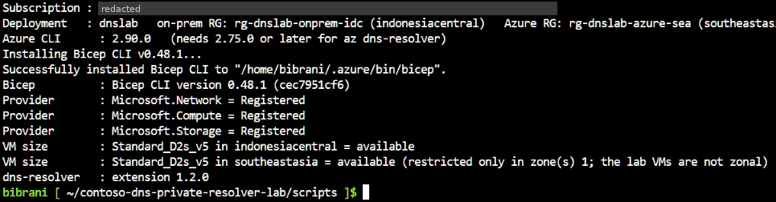
Azure CLI : 2.90.0 (needs 2.75.0 or later for az dns-resolver) Installing Bicep CLI v0.48.1... Successfully installed Bicep CLI to "/home/bibrani/.azure/bin/bicep". Bicep : Bicep CLI version 0.48.1 (cec7951cf6) Provider : Microsoft.Network = Registered Provider : Microsoft.Compute = Registered Provider : Microsoft.Storage = Registered VM size : Standard_D2s_v5 in indonesiacentral = available VM size : Standard_D2s_v5 in southeastasia = available (restricted only in zone(s) 1; the lab VMs are not zonal) dns-resolver : extension 1.2.0
NotAvailableForSubscription for Standard_D2s_v5 in zone 1 only. That is a Zone restriction; the lab VMs are regional (no zone pinned), so it does not block them. The check reports only Location restrictions as blocking. If a size really is unavailable, run export VM_SIZE=<size> and run the check again. main.bicepparam reads the same variable.The Bicep templates
main.bicep runs at subscription scope. It creates both resource groups, deploys the two gateway public IPs first (each site's local network gateway needs the other site's address), then deploys the two site modules in parallel. Secrets never sit in a file: main.bicepparam reads them with readEnvironmentVariable().
// Parameters for main.bicep. Secrets are read from environment variables that
// scripts/00-variables.sh exports from ~/.dnslab (generated once, never printed).
using './main.bicep'
param locationOnprem = 'indonesiacentral'
param locationAzure = 'southeastasia'
param vmSize = readEnvironmentVariable('VM_SIZE', 'Standard_D2s_v5')
param adminUsername = 'labadmin'
param adminPassword = readEnvironmentVariable('ADMIN_PASS')
param vpnSharedKey = readEnvironmentVariable('VPN_PSK')infra/
main.bicep subscription scope: 2 resource groups + 4 modules
main.bicepparam parameters (secrets from environment variables)
modules/
gateway-public-ip.bicep Standard, zone-redundant public IP for a VPN gateway
onprem.bicep Indonesia Central: VNet, VPN gateway, LNG, connection, dc01 (+ NTDS data disk)
azure.bicep Southeast Asia: hub + spoke, VPN gateway, LNG, connection, peering,
DNS Private Resolver, ruleset + rules, private DNS zone, storage + PE, app01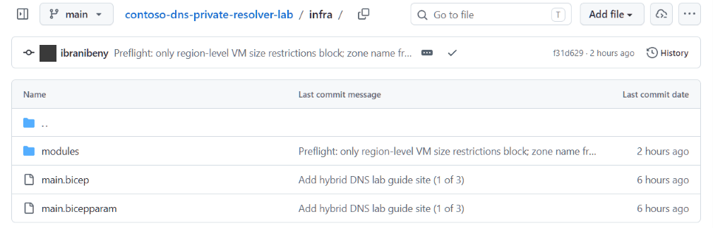
(no command output: review the templates)
Preview with what-if, then deploy
az deployment sub what-if lists every resource the template will create, before anything is created. The deployment then runs in Azure with --no-wait, so it carries on if Cloud Shell times out. The two VPN gateways are the long pole (Microsoft says a gateway can take 45 minutes or more); in this run the whole deployment finished in about 27 minutes, because the two site modules run in parallel.
bash ./01-deploy-infra.sh#!/usr/bin/env bash
# Step 1: build, preview (what-if) and deploy the whole lab with Bicep.
# The VPN gateways are the long pole (Microsoft: 45 minutes or more); the lab run on 28 Oct 2026 finished in about 27 minutes.
source ./00-variables.sh
cd ../infra
az bicep build --file main.bicep --stdout > /dev/null && echo "Bicep build: OK"
echo "--- what-if (resource changes only) ---"
az deployment sub what-if -n "$DEPLOYMENT" -l "$LOC_AZ" -p main.bicepparam --result-format ResourceIdOnly
echo "--- deploy (runs in Azure; safe to close Cloud Shell) ---"
az deployment sub create -n "$DEPLOYMENT" -l "$LOC_AZ" -p main.bicepparam --no-wait
echo "Started. Follow it in the portal: Subscriptions > your subscription > Deployments > $DEPLOYMENT,"
echo "or run ./02-wait-infra.sh"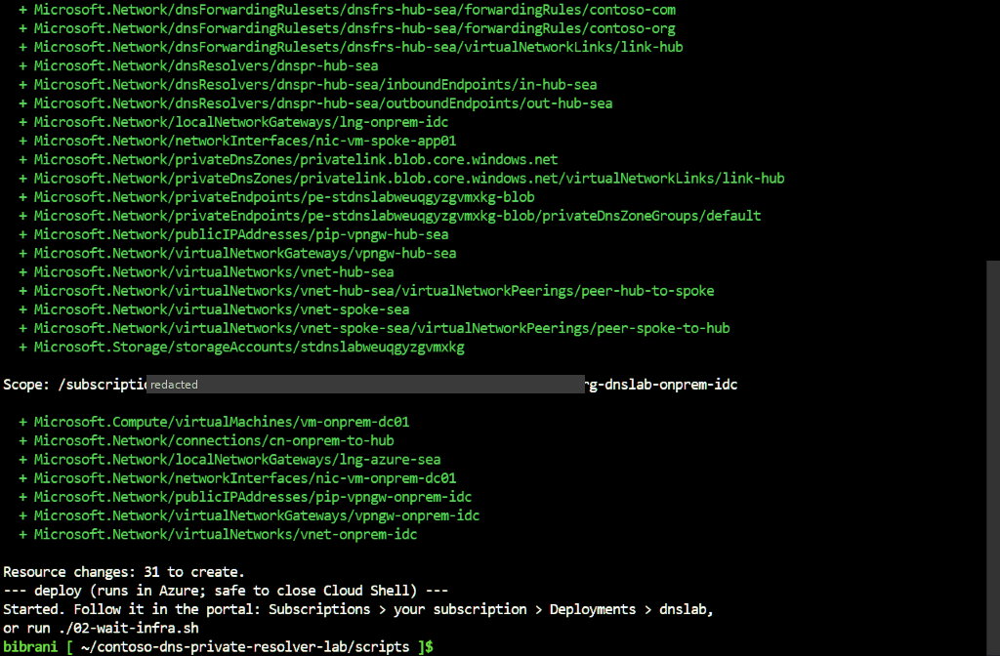
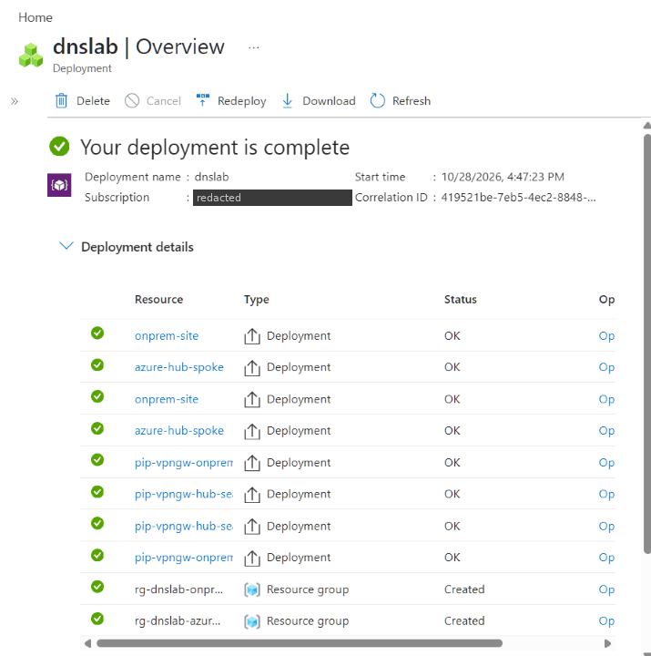
... Resource changes: 31 to create. --- deploy (runs in Azure; safe to close Cloud Shell) --- Started. Follow it in the portal: Subscriptions > your subscription > Deployments > dnslab, or run ./02-wait-infra.sh
Wait for the deployment and read its outputs
The script polls the deployment state every minute, then lists each module's duration and the outputs: both gateway public IPs, the inbound endpoint IP and the generated storage account name.
bash ./02-wait-infra.sh#!/usr/bin/env bash
# Step 2: wait for the Bicep deployment, then show its outputs. Re-run any time; it only reads state.
source ./00-variables.sh
while :; do
s=$(az deployment sub show -n "$DEPLOYMENT" --query properties.provisioningState -o tsv)
echo "$(date +%H:%M:%S) $DEPLOYMENT: $s"
case "$s" in Succeeded|Failed|Canceled) break;; esac
sleep 60
done
az deployment operation sub list -n "$DEPLOYMENT" \
--query "[].{Module:properties.targetResource.resourceName, State:properties.provisioningState, Duration:properties.duration}" -o table
az deployment sub show -n "$DEPLOYMENT" --query "properties.outputs.{onpremGatewayIp:onpremGatewayIp.value, azureGatewayIp:azureGatewayIp.value, inboundEndpointIp:inboundEndpointIp.value, storageAccount:storageAccountName.value}" -o table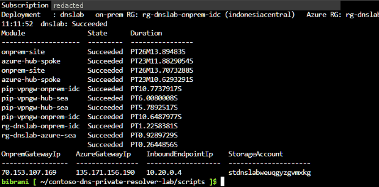
11:11:52 dnslab: Succeeded ... OnpremGatewayIp AzureGatewayIp InboundEndpointIp StorageAccount --------------- --------------- ----------------- --------------------- 70.153.107.169 135.171.156.190 10.20.0.4 stdnslabweuqgyzgvmxkg
What Bicep built: networks and peering
Each resolver endpoint gets its own subnet, /28 to /24, delegated to Microsoft.Network/dnsResolvers. The spoke VNet uses the inbound endpoint (10.20.0.4) as its DNS server. The hub keeps Azure-provided DNS, because a VNet must never use its own resolver's inbound endpoint. The peering has gateway transit on the hub side and use remote gateways on the spoke side, and is created only after the hub gateway exists.
// Hub DNS stays Azure-provided: never point the resolver's own VNet at its inbound endpoint (Microsoft Learn).
resource hub 'Microsoft.Network/virtualNetworks@2024-05-01' = {
name: 'vnet-hub-sea'
location: location
tags: tags
properties: {
addressSpace: {
addressPrefixes: [
hubAddressSpace
]
}
subnets: [
{
name: 'GatewaySubnet'
properties: {
addressPrefix: hubGatewaySubnetPrefix
}
}
{
// Each resolver endpoint needs its own /28-/24 subnet, delegated to Microsoft.Network/dnsResolvers
name: 'snet-dnspr-inbound'
properties: {
addressPrefix: inboundSubnetPrefix
delegations: [
{
name: 'Microsoft.Network.dnsResolvers'
properties: {
serviceName: 'Microsoft.Network/dnsResolvers'
}
}
]
}
}
{
name: 'snet-dnspr-outbound'
properties: {
addressPrefix: outboundSubnetPrefix
delegations: [
{
name: 'Microsoft.Network.dnsResolvers'
properties: {
serviceName: 'Microsoft.Network/dnsResolvers'
}
}
]
}
}
]
}
}
// Spoke uses the inbound endpoint as its DNS server (centralized model).
resource spoke 'Microsoft.Network/virtualNetworks@2024-05-01' = {
name: 'vnet-spoke-sea'
location: location
tags: tags
properties: {
addressSpace: {
addressPrefixes: [
spokeAddressSpace
]
}
dhcpOptions: {
dnsServers: [
inboundEndpointIp
]
}
subnets: [
{
name: 'snet-workload'
properties: {
addressPrefix: workloadSubnetPrefix
defaultOutboundAccess: true // lab shortcut for Run Command output; use explicit egress in production
}
}
{
name: 'snet-pe'
properties: {
addressPrefix: peSubnetPrefix
}
}
]
}
}
// Gateway transit needs the hub gateway to exist first.
resource peerHubToSpoke 'Microsoft.Network/virtualNetworks/virtualNetworkPeerings@2024-05-01' = {
parent: hub
name: 'peer-hub-to-spoke'
properties: {
remoteVirtualNetwork: {
id: spoke.id
}
allowVirtualNetworkAccess: true
allowForwardedTraffic: true
allowGatewayTransit: true
useRemoteGateways: false
}
dependsOn: [
gw
]
}
resource peerSpokeToHub 'Microsoft.Network/virtualNetworks/virtualNetworkPeerings@2024-05-01' = {
parent: spoke
name: 'peer-spoke-to-hub'
properties: {
remoteVirtualNetwork: {
id: hub.id
}
allowVirtualNetworkAccess: true
allowForwardedTraffic: true
allowGatewayTransit: false
useRemoteGateways: true
}
dependsOn: [
gw
peerHubToSpoke
]
}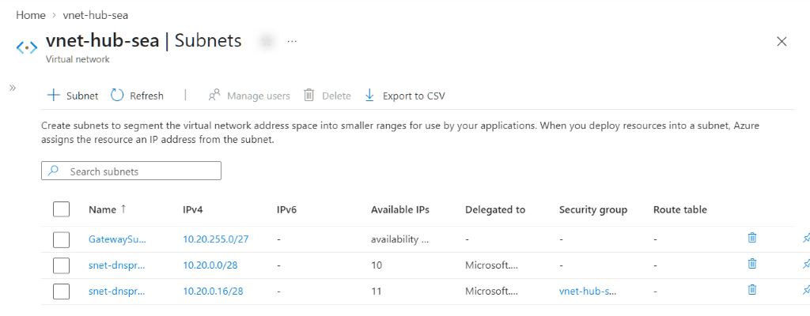
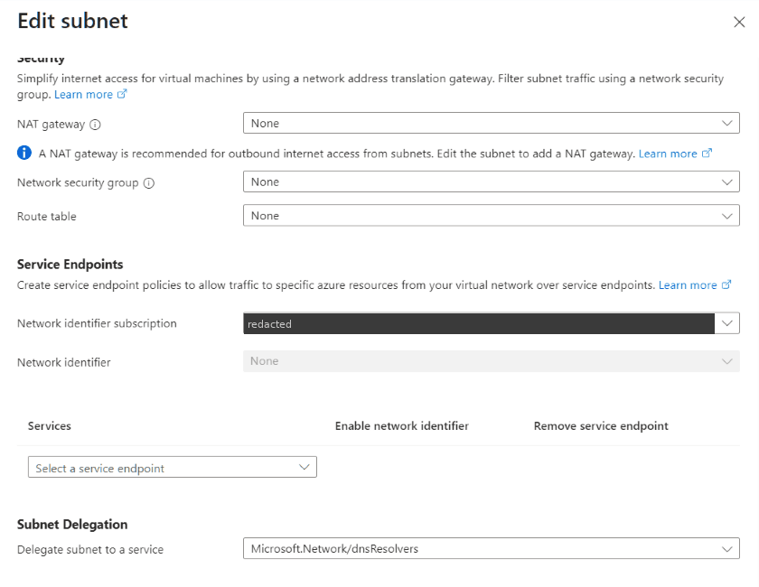
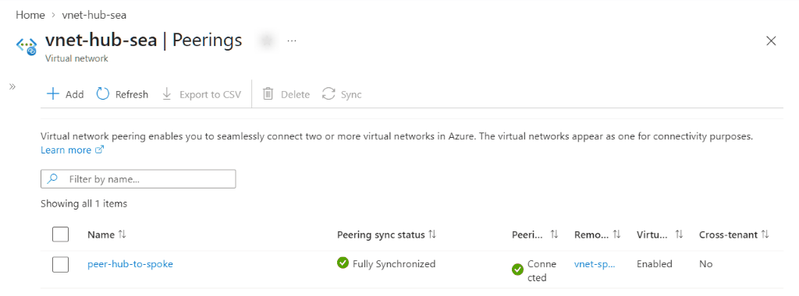
Subnet Prefix Delegation ------------------- -------------- ------------------------------ GatewaySubnet 10.20.255.0/27 snet-dnspr-inbound 10.20.0.0/28 Microsoft.Network/dnsResolvers snet-dnspr-outbound 10.20.0.16/28 Microsoft.Network/dnsResolvers Peering State GatewayTransit ----------------- --------- -------------- peer-hub-to-spoke Connected True Peering State UseRemoteGateways ----------------- --------- ----------------- peer-spoke-to-hub Connected True
What Bicep built: site-to-site VPN
New VPN gateways must use the zone-redundant AZ SKUs, here VpnGw1AZ, with a Standard zone-redundant public IP. Each site has a local network gateway describing the other site and an IPsec/IKEv2 connection with the same pre-shared key. The on-prem side lists the hub and spoke ranges, so replies to the resolver's outbound endpoint and to the spoke VM come back through the tunnel.
resource gw 'Microsoft.Network/virtualNetworkGateways@2024-05-01' = {
name: 'vpngw-hub-sea'
location: location
tags: tags
properties: {
gatewayType: 'Vpn'
vpnType: 'RouteBased'
vpnGatewayGeneration: 'Generation1'
sku: {
name: 'VpnGw1AZ'
tier: 'VpnGw1AZ'
}
activeActive: false
enableBgp: false
ipConfigurations: [
{
name: 'default'
properties: {
privateIPAllocationMethod: 'Dynamic'
subnet: {
id: '${hub.id}/subnets/GatewaySubnet'
}
publicIPAddress: {
id: gatewayPublicIpId
}
}
}
]
}
}
// Describes the "on-prem" site as seen from Azure.
resource lng 'Microsoft.Network/localNetworkGateways@2024-05-01' = {
name: 'lng-onprem-idc'
location: location
tags: tags
properties: {
gatewayIpAddress: remoteGatewayIp
localNetworkAddressSpace: {
addressPrefixes: remoteAddressPrefixes
}
}
}
resource cn 'Microsoft.Network/connections@2024-05-01' = {
name: 'cn-hub-to-onprem'
location: location
tags: tags
properties: {
connectionType: 'IPsec'
connectionProtocol: 'IKEv2'
virtualNetworkGateway1: {
id: gw.id
properties: {}
}
localNetworkGateway2: {
id: lng.id
properties: {}
}
sharedKey: vpnSharedKey
enableBgp: false
}
}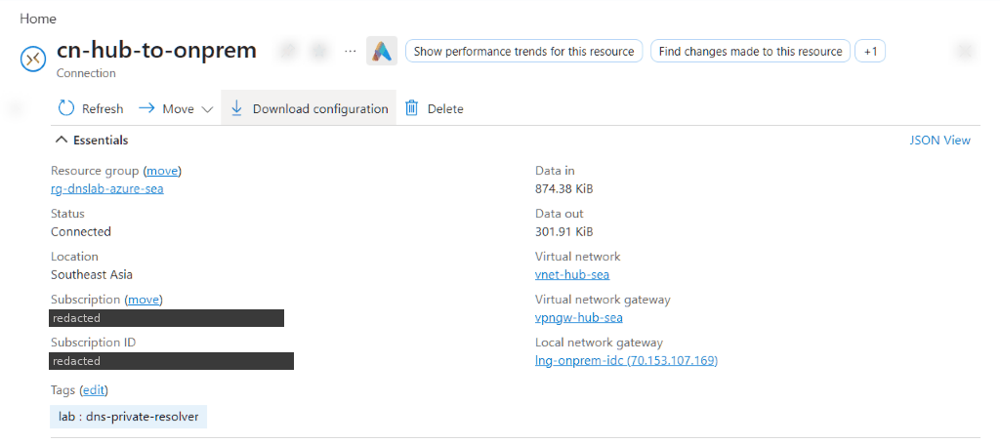
Connection Status Type Protocol cn-hub-to-onprem Connected IPsec IKEv2 cn-onprem-to-hub Connected IPsec IKEv2
What Bicep built: DNS Private Resolver, ruleset and rules
The inbound endpoint (static 10.20.0.4) is the DNS server for the spoke and the target of the on-prem forwarders. The outbound endpoint plus the ruleset send contoso.org. and contoso.com. to the DC. Longest-suffix matching means _msdcs, _sites and _tcp are covered too. The ruleset is linked to the hub only: spoke queries reach it through the inbound endpoint, in the hub context.
resource resolver 'Microsoft.Network/dnsResolvers@2022-07-01' = {
name: 'dnspr-hub-sea'
location: location
tags: tags
properties: {
virtualNetwork: {
id: hub.id
}
}
}
resource inbound 'Microsoft.Network/dnsResolvers/inboundEndpoints@2022-07-01' = {
parent: resolver
name: 'in-hub-sea'
location: location
tags: tags
properties: {
ipConfigurations: [
{
privateIpAllocationMethod: 'Static'
privateIpAddress: inboundEndpointIp
subnet: {
id: '${hub.id}/subnets/snet-dnspr-inbound'
}
}
]
}
}
resource outbound 'Microsoft.Network/dnsResolvers/outboundEndpoints@2022-07-01' = {
parent: resolver
name: 'out-hub-sea'
location: location
tags: tags
properties: {
subnet: {
id: '${hub.id}/subnets/snet-dnspr-outbound'
}
}
}
resource ruleset 'Microsoft.Network/dnsForwardingRulesets@2022-07-01' = {
name: 'dnsfrs-hub-sea'
location: location
tags: tags
properties: {
dnsResolverOutboundEndpoints: [
{
id: outbound.id
}
]
}
}
// contoso.org. and contoso.com. -> the on-prem DC (longest-suffix match also covers _msdcs, _sites, _tcp)
resource rules 'Microsoft.Network/dnsForwardingRulesets/forwardingRules@2022-07-01' = [for d in forwardedDomains: {
parent: ruleset
name: replace(d, '.', '-')
properties: {
domainName: '${d}.'
forwardingRuleState: 'Enabled'
targetDnsServers: [
{
ipAddress: dnsTargetIp
port: 53
}
]
}
}]
// Linked to the HUB only: spokes reach the rules through the inbound endpoint (hub context).
resource rulesetHubLink 'Microsoft.Network/dnsForwardingRulesets/virtualNetworkLinks@2022-07-01' = {
parent: ruleset
name: 'link-hub'
properties: {
virtualNetwork: {
id: hub.id
}
}
}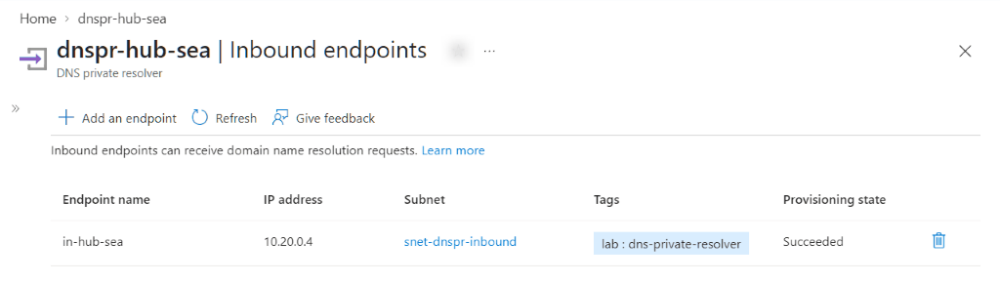
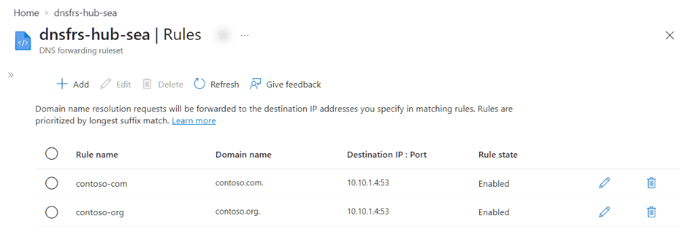
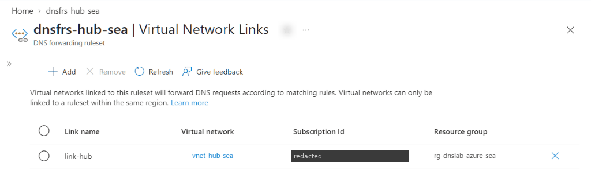
Inbound IP Allocation ---------- --------- ---------- in-hub-sea 10.20.0.4 Static Rule Domain Target State ----------- ------------ --------- ------- contoso-com contoso.com. 10.10.1.4 Enabled contoso-org contoso.org. 10.10.1.4 Enabled RulesetLink VNet link-hub vnet-hub-sea
What Bicep built: Private Endpoint and the private DNS zone
privatelink.blob.core.windows.net is linked to the hub, where the resolver lives. The Private Endpoint's DNS zone group writes the A record. The hub link has fallback to internet (NxDomainRedirect), because the VPN Gateway FAQ asks for it when this zone is linked to a VNet that hosts a VPN gateway: the gateway needs Blob Storage endpoints. The storage account has public network access disabled.
resource blobZone 'Microsoft.Network/privateDnsZones@2024-06-01' = {
name: blobZoneName
location: 'global'
tags: tags
}
// Linked to the hub (the resolver's VNet). Fallback to internet (NxDomainRedirect): the VPN Gateway FAQ asks for it
// when privatelink.blob.core.windows.net is linked to a VNet that hosts a VPN gateway (the gateway needs Blob Storage).
resource blobZoneHubLink 'Microsoft.Network/privateDnsZones/virtualNetworkLinks@2024-06-01' = {
parent: blobZone
name: 'link-hub'
location: 'global'
tags: tags
properties: {
virtualNetwork: {
id: hub.id
}
registrationEnabled: false
resolutionPolicy: 'NxDomainRedirect'
}
}
resource st 'Microsoft.Storage/storageAccounts@2023-05-01' = {
name: storageAccountName
location: location
tags: tags
sku: {
name: 'Standard_LRS'
}
kind: 'StorageV2'
properties: {
publicNetworkAccess: 'Disabled'
allowBlobPublicAccess: false
allowSharedKeyAccess: false
minimumTlsVersion: 'TLS1_2'
supportsHttpsTrafficOnly: true
}
}
resource pe 'Microsoft.Network/privateEndpoints@2024-05-01' = {
name: 'pe-${storageAccountName}-blob'
location: location
tags: tags
properties: {
subnet: {
id: '${spoke.id}/subnets/snet-pe'
}
privateLinkServiceConnections: [
{
name: 'plsc-blob'
properties: {
privateLinkServiceId: st.id
groupIds: [
'blob'
]
}
}
]
}
}
resource peZoneGroup 'Microsoft.Network/privateEndpoints/privateDnsZoneGroups@2024-05-01' = {
parent: pe
name: 'default'
properties: {
privateDnsZoneConfigs: [
{
name: 'blob'
properties: {
privateDnsZoneId: blobZone.id
}
}
]
}
}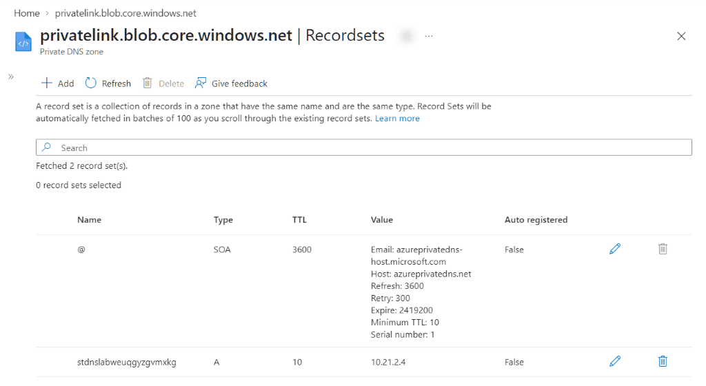
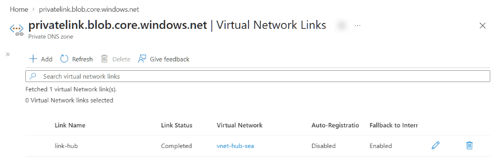
Record IP --------------------- --------- stdnslabweuqgyzgvmxkg 10.21.2.4 Link AutoRegistration ResolutionPolicy State -------- ---------------- ---------------- --------- link-hub False NxDomainRedirect Completed
What Bicep built: the VMs and their DNS settings
Both VMs have a static private IP (Microsoft recommends this for domain controllers) and no public IP, so in-guest work goes through Run Command. dc01 keeps its AD DS database on a data disk with host caching None. The on-prem VNet keeps Azure-provided DNS, because it hosts a VPN gateway and the VPN Gateway FAQ recommends Azure DNS there. dc01's NIC points at itself instead, which overrides the VNet setting. The VM subnets keep default outbound access so Run Command can return its output (a lab shortcut).
bash ./03-verify-infra.sh#!/usr/bin/env bash
# Step 3: read back what Bicep built: networks, VPN, peering, resolver, private DNS, VMs (lab resource groups only).
source ./00-variables.sh
echo "== VNets and DNS servers =="
for rg in "$RG_ONP" "$RG_AZ"; do
az network vnet list -g "$rg" --query "[].{VNet:name, Region:location, Prefix:join(',',addressSpace.addressPrefixes), DNS:join(',',dhcpOptions.dnsServers || ['Azure-provided'])}" -o tsv
done | awk -F'\t' 'BEGIN{printf "%-16s %-18s %-14s %s\n","VNet","Region","Prefix","DNS servers"} {printf "%-16s %-18s %-14s %s\n",$1,$2,$3,$4}'
echo "== Delegated resolver subnets =="
az network vnet subnet list -g "$RG_AZ" --vnet-name vnet-hub-sea --query "[].{Subnet:name, Prefix:addressPrefix, Delegation:join(',',delegations[].serviceName)}" -o table
echo "== Site-to-site connections =="
for c in "$RG_AZ cn-hub-to-onprem" "$RG_ONP cn-onprem-to-hub"; do
set -- $c
az network vpn-connection show -g "$1" -n "$2" --query "[[name, connectionStatus, connectionType, connectionProtocol]]" -o tsv
done | awk -F'\t' 'BEGIN{printf "%-18s %-10s %-6s %s\n","Connection","Status","Type","Protocol"} {printf "%-18s %-10s %-6s %s\n",$1,$2,$3,$4}'
echo "== Peering =="
az network vnet peering list -g "$RG_AZ" --vnet-name vnet-hub-sea --query "[].{Peering:name, State:peeringState, GatewayTransit:allowGatewayTransit}" -o table
az network vnet peering list -g "$RG_AZ" --vnet-name vnet-spoke-sea --query "[].{Peering:name, State:peeringState, UseRemoteGateways:useRemoteGateways}" -o table
echo "== DNS Private Resolver =="
az dns-resolver inbound-endpoint list -g "$RG_AZ" --dns-resolver-name dnspr-hub-sea --query "[].{Inbound:name, IP:ipConfigurations[0].privateIpAddress, Allocation:ipConfigurations[0].privateIpAllocationMethod}" -o table
az dns-resolver forwarding-rule list -g "$RG_AZ" --ruleset-name dnsfrs-hub-sea --query "[].{Rule:name, Domain:domainName, Target:join(',',targetDnsServers[].ipAddress), State:forwardingRuleState}" -o table
az dns-resolver vnet-link list -g "$RG_AZ" --ruleset-name dnsfrs-hub-sea --query "[].[name, virtualNetwork.id]" -o tsv \
| awk -F'\t' 'BEGIN{printf "%-12s %s\n","RulesetLink","VNet"} {n=split($2,p,"/"); printf "%-12s %s\n",$1,p[n]}'
echo "== Private DNS zone =="
az network private-dns record-set a list -g "$RG_AZ" -z privatelink.blob.core.windows.net --query "[].{Record:name, IP:join(',',aRecords[].ipv4Address)}" -o table
az network private-dns link vnet list -g "$RG_AZ" -z privatelink.blob.core.windows.net --query "[].{Link:name, AutoRegistration:registrationEnabled, ResolutionPolicy:resolutionPolicy, State:virtualNetworkLinkState}" -o table
echo "== VMs =="
for rg in "$RG_ONP" "$RG_AZ"; do
az vm list -d -g "$rg" --query "[].[name, location, privateIps, publicIps || 'none', powerState]" -o tsv
done | awk -F'\t' 'BEGIN{printf "%-16s %-18s %-11s %-9s %s\n","VM","Region","PrivateIP","PublicIP","State"} {printf "%-16s %-18s %-11s %-9s %s\n",$1,$2,$3,$4,$5}'resource nic 'Microsoft.Network/networkInterfaces@2024-05-01' = {
name: 'nic-vm-onprem-dc01'
location: location
tags: tags
properties: {
ipConfigurations: [
{
name: 'ipconfig1'
properties: {
privateIPAllocationMethod: 'Static' // Microsoft guidance: static private IP for DCs
privateIPAddress: dcPrivateIp
subnet: {
id: '${vnet.id}/subnets/snet-servers'
}
}
}
]
dnsSettings: {
// NIC-level DNS overrides the VNet setting. dc01 uses itself first. 168.63.129.16 is second so the VM can
// still resolve Azure endpoints before the DNS role exists (lab bootstrap; production DCs point only to DCs).
dnsServers: [
dcPrivateIp
'168.63.129.16'
]
}
}
}
resource vm 'Microsoft.Compute/virtualMachines@2024-07-01' = {
name: 'vm-onprem-dc01'
location: location
tags: tags
properties: {
hardwareProfile: {
vmSize: vmSize
}
osProfile: {
computerName: 'dc01'
adminUsername: adminUsername
adminPassword: adminPassword
windowsConfiguration: {
provisionVMAgent: true
enableAutomaticUpdates: true
timeZone: 'SE Asia Standard Time'
}
}
storageProfile: {
imageReference: {
publisher: 'MicrosoftWindowsServer'
offer: 'WindowsServer'
sku: '2022-datacenter-azure-edition'
version: 'latest'
}
osDisk: {
name: 'osdisk-vm-onprem-dc01'
createOption: 'FromImage'
managedDisk: {
storageAccountType: 'StandardSSD_LRS'
}
}
dataDisks: [
{
// AD DS database, logs and SYSVOL go on a data disk with host caching None (Microsoft guidance for DCs on Azure).
name: 'datadisk-vm-onprem-dc01-ntds'
lun: 0
createOption: 'Empty'
diskSizeGB: 32
caching: 'None'
managedDisk: {
storageAccountType: 'StandardSSD_LRS'
}
}
]
}
networkProfile: {
networkInterfaces: [
{
id: nic.id
}
]
}
securityProfile: {
securityType: 'TrustedLaunch'
uefiSettings: {
secureBootEnabled: true
vTpmEnabled: true
}
}
diagnosticsProfile: {
bootDiagnostics: {
enabled: true
}
}
}
}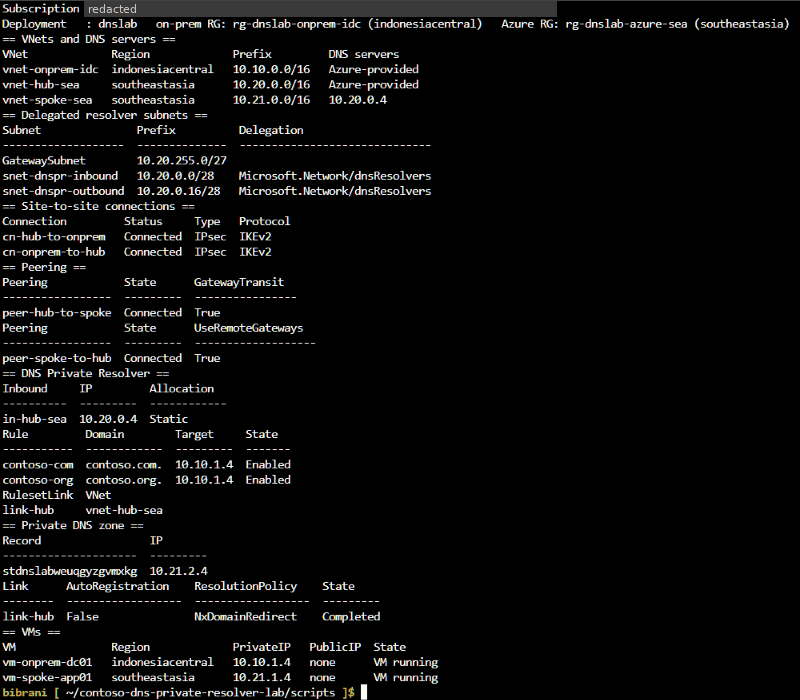
== VNets and DNS servers == VNet Region Prefix DNS servers vnet-onprem-idc indonesiacentral 10.10.0.0/16 Azure-provided vnet-hub-sea southeastasia 10.20.0.0/16 Azure-provided vnet-spoke-sea southeastasia 10.21.0.0/16 10.20.0.4 == Delegated resolver subnets == Subnet Prefix Delegation ------------------- -------------- ------------------------------ GatewaySubnet 10.20.255.0/27 snet-dnspr-inbound 10.20.0.0/28 Microsoft.Network/dnsResolvers snet-dnspr-outbound 10.20.0.16/28 Microsoft.Network/dnsResolvers == Site-to-site connections == Connection Status Type Protocol cn-hub-to-onprem Connected IPsec IKEv2 cn-onprem-to-hub Connected IPsec IKEv2 == Peering == Peering State GatewayTransit ----------------- --------- -------------- peer-hub-to-spoke Connected True Peering State UseRemoteGateways ----------------- --------- ----------------- peer-spoke-to-hub Connected True == DNS Private Resolver == Inbound IP Allocation ---------- --------- ---------- in-hub-sea 10.20.0.4 Static Rule Domain Target State ----------- ------------ --------- ------- contoso-com contoso.com. 10.10.1.4 Enabled contoso-org contoso.org. 10.10.1.4 Enabled RulesetLink VNet link-hub vnet-hub-sea == Private DNS zone == Record IP --------------------- --------- stdnslabweuqgyzgvmxkg 10.21.2.4 Link AutoRegistration ResolutionPolicy State -------- ---------------- ---------------- --------- link-hub False NxDomainRedirect Completed == VMs == VM Region PrivateIP PublicIP State vm-onprem-dc01 indonesiacentral 10.10.1.4 none VM running vm-spoke-app01 southeastasia 10.21.1.4 none VM running
Promote dc01: contoso.org (AD DS + DNS)
This builds the "on-prem" DNS side: an AD-integrated DNS server that is authoritative for contoso.org (the AD domain) and contoso.com (a second, forest-wide zone). Internet names are forwarded to 168.63.129.16 with a 5-second timeout, because Learn says Windows DNS servers forwarding to Azure DNS should wait more than 4 seconds.
bash ./04-promote-dc.sh#!/usr/bin/env bash
# Step 4: promote vm-onprem-dc01 to the first DC of contoso.org (AD DS + DNS), then add the lab records.
# Safe to re-run: the promotion is skipped when dc01 is already a domain controller.
source ./00-variables.sh
role=$(az vm run-command invoke -g "$RG_ONP" -n "$VM_DC" --command-id RunPowerShellScript \
--scripts "(Get-CimInstance Win32_ComputerSystem).DomainRole" \
--query "value[0].message" -o tsv | sed -n '/\[stdout\]/{n;p}' | tr -dc '0-9')
if [ "${role:-0}" -ge 4 ]; then
echo "dc01 is already a domain controller (DomainRole=$role): promotion skipped."
else
# An ephemeral Cloud Shell session loses ~/.dnslab, and with it the password the VMs were created with.
# Re-apply the current password to dc01's local administrator before the promotion turns it into the
# domain administrator. VMAccess (az vm user update) supports this only while the VM is NOT yet a DC (Microsoft Learn).
az vm user update -g "$RG_ONP" -n "$VM_DC" -u "$ADMIN_USER" -p "$ADMIN_PASS" -o none \
&& echo "dc01: local administrator password re-applied (VMAccess)."
az vm run-command invoke -g "$RG_ONP" -n "$VM_DC" --command-id RunPowerShellScript \
--scripts @ps/dc-promote.ps1 --parameters "DomainName=$DOMAIN" "NetbiosName=$NETBIOS" "SafeModePassword=$ADMIN_PASS" \
--query "value[0].message" -o tsv
echo "Waiting 8 minutes for the promotion reboot ..."; sleep 480
fi
az vm run-command invoke -g "$RG_ONP" -n "$VM_DC" --command-id RunPowerShellScript \
--scripts @ps/dc-configure.ps1 --parameters "SecondZone=$DOMAIN2" \
--query "value[0].message" -o tsv# Runs on vm-onprem-dc01 via Run Command: prepare the NTDS data disk, install AD DS + DNS, create the forest.
param([string]$DomainName, [string]$NetbiosName, [string]$SafeModePassword)
$ErrorActionPreference = 'Stop'
# Data disk (LUN 0, host caching None) for the AD DS database, logs and SYSVOL
$raw = Get-Disk | Where-Object PartitionStyle -eq 'RAW' | Select-Object -First 1
if ($raw) {
$raw | Initialize-Disk -PartitionStyle GPT -PassThru | New-Partition -DriveLetter F -UseMaximumSize |
Format-Volume -FileSystem NTFS -NewFileSystemLabel 'NTDS' -Confirm:$false | Out-Null
}
"Data disk: $((Get-Volume -DriveLetter F).FileSystemLabel) F:\ $([math]::Round((Get-Volume -DriveLetter F).Size/1GB)) GB"
$f = Install-WindowsFeature AD-Domain-Services, DNS -IncludeManagementTools
"Install-WindowsFeature: Success=$($f.Success) RestartNeeded=$($f.RestartNeeded)"
$dsrm = ConvertTo-SecureString $SafeModePassword -AsPlainText -Force # lab only; use Key Vault in production
$r = Install-ADDSForest -DomainName $DomainName -DomainNetbiosName $NetbiosName -InstallDns `
-DatabasePath 'F:\NTDS' -LogPath 'F:\NTDS' -SysvolPath 'F:\SYSVOL' `
-SafeModeAdministratorPassword $dsrm -NoRebootOnCompletion -Force -WarningAction SilentlyContinue
"Install-ADDSForest: Status=$($r.Status) RebootRequired=$($r.RebootRequired)"
"Message: $($r.Message)"
# Reboot outside Run Command so the command can return its output first
shutdown.exe /r /t 60 /c "AD DS promotion completed" | Out-Null
"Rebooting in 60 seconds to finish the promotion."# Runs on vm-onprem-dc01 after the promotion reboot: upstream forwarder, second zone, test records.
param([string]$SecondZone)
$ErrorActionPreference = 'Stop'
# Internet names go to the Azure-provided DNS of this VNet (stands in for the ISP / on-prem upstream).
# Microsoft Learn: Windows DNS servers that forward to Azure DNS should use a forwarding timeout above 4 seconds.
Set-DnsServerForwarder -IPAddress 168.63.129.16 -UseRootHint $false -Timeout 5
if (-not (Get-DnsServerZone -Name $SecondZone -ErrorAction SilentlyContinue)) {
Add-DnsServerPrimaryZone -Name $SecondZone -ReplicationScope Forest
}
$dom = (Get-ADDomain).DNSRoot
Add-DnsServerResourceRecordA -ZoneName $SecondZone -Name portal -IPv4Address 10.10.1.60 -ErrorAction SilentlyContinue
Add-DnsServerResourceRecordA -ZoneName $dom -Name intranet -IPv4Address 10.10.1.50 -ErrorAction SilentlyContinue
"Domain: $dom DC: $env:COMPUTERNAME Forest mode: $((Get-ADForest).ForestMode)"
Get-DnsServerZone | Where-Object { -not $_.IsAutoCreated -and $_.ZoneName -notlike '*.arpa' -and $_.ZoneName -ne 'TrustAnchors' } |
Format-Table ZoneName, ZoneType, IsDsIntegrated, ReplicationScope -AutoSize | Out-String -Width 110
$fw = Get-DnsServerForwarder
"Server forwarder: $($fw.IPAddress.IPAddressToString -join ',') UseRootHint=$($fw.UseRootHint) Timeout=$($fw.Timeout)s"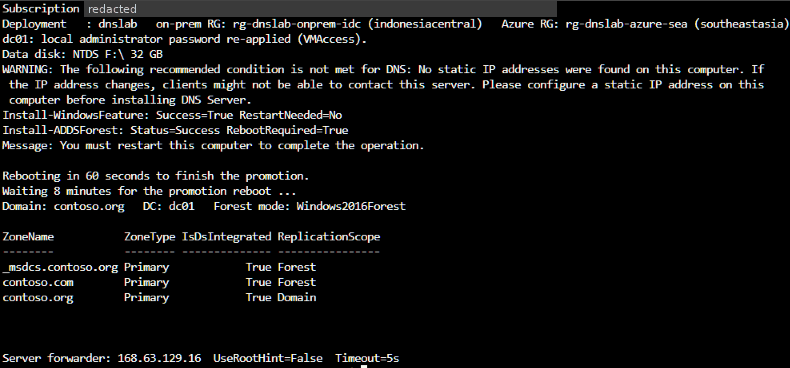
dc01: local administrator password re-applied (VMAccess). Data disk: NTDS F:\ 32 GB WARNING: The following recommended condition is not met for DNS: No static IP addresses were found on this computer. If the IP address changes, clients might not be able to contact this server. Please configure a static IP address on this computer before installing DNS Server. Install-WindowsFeature: Success=True RestartNeeded=No Install-ADDSForest: Status=Success RebootRequired=True Message: You must restart this computer to complete the operation. Rebooting in 60 seconds to finish the promotion. Waiting 8 minutes for the promotion reboot ... Domain: contoso.org DC: dc01 Forest mode: Windows2016Forest ZoneName ZoneType IsDsIntegrated ReplicationScope -------- -------- -------------- ---------------- _msdcs.contoso.org Primary True Forest contoso.com Primary True Forest contoso.org Primary True Domain Server forwarder: 168.63.129.16 UseRootHint=False Timeout=5s
On-prem → Azure: conditional forwarder to the inbound endpoint
The same query, <storage>.blob.core.windows.net, runs three times: before (no forwarder), with Option A (forward privatelink.blob.core.windows.net, as Contoso does today) and with Option B (forward the public zone blob.core.windows.net, as Microsoft Learn recommends). Each forwarder is AD-integrated with replication scope Forest.
bash ./05-onprem-forwarder.sh#!/usr/bin/env bash
# Step 5: on-prem AD DNS -> Azure. Test before, then Option A (privatelink zone), then Option B (public zone).
source ./00-variables.sh
FQDN="$ST_NAME.blob.core.windows.net"
run() { az vm run-command invoke -g "$RG_ONP" -n "$VM_DC" --command-id RunPowerShellScript \
--scripts @ps/onprem-forwarder-test.ps1 --parameters "Mode=$1" "Fqdn=$FQDN" "InboundIp=$INBOUND_IP" \
--query "value[0].message" -o tsv; }
echo "=== BEFORE (no forwarder) ==="; run Before
echo "=== OPTION A: privatelink.blob.core.windows.net -> $INBOUND_IP ==="; run OptionA
echo "=== OPTION B: blob.core.windows.net -> $INBOUND_IP ==="; run OptionB# Runs on vm-onprem-dc01: resolve a Private Endpoint name before / with Option A / with Option B forwarders.
param([string]$Mode, [string]$Fqdn, [string]$InboundIp)
$pl = 'privatelink.blob.core.windows.net'
$pub = 'blob.core.windows.net'
function Drop($z) { if (Get-DnsServerZone -Name $z -ErrorAction SilentlyContinue) { Remove-DnsServerZone -Name $z -Force } }
function Add($z) { if (-not (Get-DnsServerZone -Name $z -ErrorAction SilentlyContinue)) {
Add-DnsServerConditionalForwarderZone -Name $z -MasterServers $InboundIp -ReplicationScope Forest } }
switch ($Mode) {
'Before' { Drop $pl; Drop $pub }
'OptionA' { Drop $pub; Add $pl }
'OptionB' { Drop $pl; Add $pub }
}
Clear-DnsServerCache -Force; Clear-DnsClientCache
$ans = Resolve-DnsName $Fqdn -Server 127.0.0.1 -DnsOnly -ErrorAction SilentlyContinue
$a = ($ans | Where-Object Type -eq 'A' | Select-Object -ExpandProperty IPAddress) -join ', '
$cn = ($ans | Where-Object Type -eq 'CNAME' | ForEach-Object { $_.NameHost }) -join ' > '
"Mode : $Mode"
"Query : $Fqdn (asked to this DNS server)"
"CNAME chain: $cn"
"A record : $a"
"Private IP?: $(if ($a -match '^10\.') {'YES - Private Endpoint'} else {'no - public address'})"
"Conditional forwarders on this server:"
Get-DnsServerZone | Where-Object ZoneType -eq 'Forwarder' |
Format-Table ZoneName, @{n='MasterServers';e={$_.MasterServers.IPAddressToString -join ','}}, IsDsIntegrated, ReplicationScope -AutoSize |
Out-String -Width 120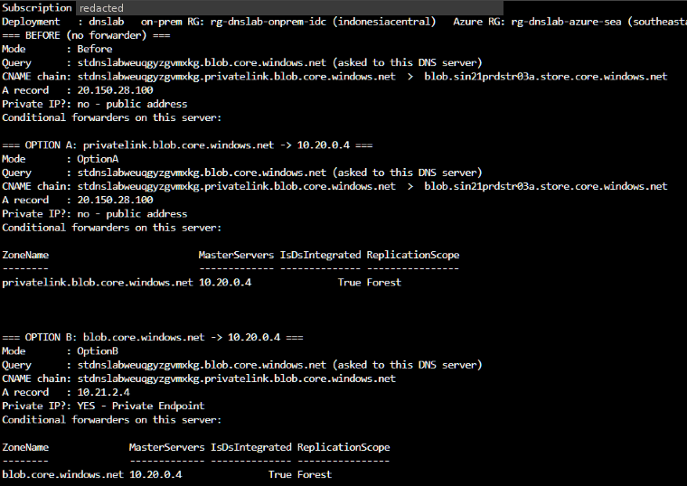
=== BEFORE (no forwarder) === Mode : Before Query : stdnslabweuqgyzgvmxkg.blob.core.windows.net (asked to this DNS server) CNAME chain: stdnslabweuqgyzgvmxkg.privatelink.blob.core.windows.net > blob.sin21prdstr03a.store.core.windows.net A record : 20.150.28.100 Private IP?: no - public address Conditional forwarders on this server: === OPTION A: privatelink.blob.core.windows.net -> 10.20.0.4 === Mode : OptionA Query : stdnslabweuqgyzgvmxkg.blob.core.windows.net (asked to this DNS server) CNAME chain: stdnslabweuqgyzgvmxkg.privatelink.blob.core.windows.net > blob.sin21prdstr03a.store.core.windows.net A record : 20.150.28.100 Private IP?: no - public address Conditional forwarders on this server: ZoneName MasterServers IsDsIntegrated ReplicationScope -------- ------------- -------------- ---------------- privatelink.blob.core.windows.net 10.20.0.4 True Forest === OPTION B: blob.core.windows.net -> 10.20.0.4 === Mode : OptionB Query : stdnslabweuqgyzgvmxkg.blob.core.windows.net (asked to this DNS server) CNAME chain: stdnslabweuqgyzgvmxkg.privatelink.blob.core.windows.net A record : 10.21.2.4 Private IP?: YES - Private Endpoint Conditional forwarders on this server: ZoneName MasterServers IsDsIntegrated ReplicationScope -------- ------------- -------------- ---------------- blob.core.windows.net 10.20.0.4 True Forest
Result of this run: Option A returned the public IP (20.150.28.100); Option B returned the Private Endpoint IP (10.21.2.4). Likely cause (not documented by Microsoft; verify in a PoC): dc01 sends every other name to its server forwarder 168.63.129.16, a recursive resolver that returns the whole CNAME chain (
blob → privatelink → public A record) in one answer, so Windows DNS never asks its privatelink forwarder for the CNAME target. A DNS server that resolves internet names iteratively (root hints) may behave differently; it was not tested here.Azure → AD: tests from the spoke VM
The spoke VM asks only the inbound endpoint. AD names and the DC-locator SRV record must come back from the DC across the VPN through the ruleset, and the storage name must resolve to the Private Endpoint IP through the hub-linked zone.
bash ./06-test-spoke.sh#!/usr/bin/env bash
# Step 6: tests from the spoke VM (VNet DNS = inbound endpoint): AD names, DC locator, Private Endpoint, ports.
source ./00-variables.sh
az vm run-command invoke -g "$RG_AZ" -n "$VM_APP" --command-id RunPowerShellScript \
--scripts @ps/spoke-test.ps1 --parameters "Domain=$DOMAIN" "Domain2=$DOMAIN2" "DcIp=$DC_IP" "Fqdn=$ST_NAME.blob.core.windows.net" \
--query "value[0].message" -o tsv# Runs on vm-spoke-app01 (VNet DNS = DNS Private Resolver inbound endpoint).
param([string]$Domain, [string]$Domain2, [string]$DcIp, [string]$Fqdn)
Clear-DnsClientCache
$dns = (Get-DnsClientServerAddress -AddressFamily IPv4 | Where-Object { $_.ServerAddresses } | Select-Object -First 1).ServerAddresses -join ','
"DNS server used by this VM: $dns"
""
function Q([string]$name, [string]$type = 'A') {
$r = Resolve-DnsName $name -Type $type -DnsOnly -ErrorAction SilentlyContinue
if (-not $r) { return ('{0,-44} {1,-4} FAILED' -f $name, $type) }
if ($type -eq 'SRV') { $v = ($r | Where-Object Type -eq 'SRV' | ForEach-Object { "$($_.NameTarget):$($_.Port)" }) -join ', ' }
else {
$v = ($r | Where-Object Type -eq 'A' | Select-Object -ExpandProperty IPAddress) -join ', '
$cn = $r | Where-Object Type -eq 'CNAME' | Select-Object -First 1 -ExpandProperty NameHost
if ($cn) { $v = "$v (via $cn)" }
}
'{0,-44} {1,-4} {2}' -f $name, $type, $v
}
Q "dc01.$Domain"
Q "intranet.$Domain"
Q "_ldap._tcp.dc._msdcs.$Domain" 'SRV'
Q "portal.$Domain2"
Q $Fqdn
Q 'www.microsoft.com'
""
"DC locator (nltest /dsgetdc:$Domain /force):"
(nltest /dsgetdc:$Domain /force 2>&1 | Select-String 'DC:|Address:|Dom Name:|Dc Site Name:|completed successfully|ERROR') -join "`n"
""
foreach ($p in 53, 88, 389, 445) {
$t = Test-NetConnection $DcIp -Port $p -WarningAction SilentlyContinue
'TCP {0,-4} to {1} : {2}' -f $p, $DcIp, $t.TcpTestSucceeded
}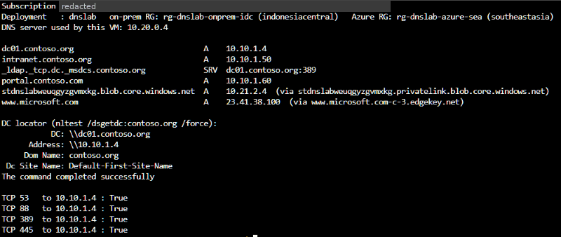
DNS server used by this VM: 10.20.0.4
dc01.contoso.org A 10.10.1.4
intranet.contoso.org A 10.10.1.50
_ldap._tcp.dc._msdcs.contoso.org SRV dc01.contoso.org:389
portal.contoso.com A 10.10.1.60
stdnslabweuqgyzgvmxkg.blob.core.windows.net A 10.21.2.4 (via stdnslabweuqgyzgvmxkg.privatelink.blob.core.windows.net)
www.microsoft.com A 23.41.38.100 (via www.microsoft.com-c-3.edgekey.net)
DC locator (nltest /dsgetdc:contoso.org /force):
DC: \\dc01.contoso.org
Address: \\10.10.1.4
Dom Name: contoso.org
Dc Site Name: Default-First-Site-Name
The command completed successfully
TCP 53 to 10.10.1.4 : True
TCP 88 to 10.10.1.4 : True
TCP 389 to 10.10.1.4 : True
TCP 445 to 10.10.1.4 : TrueDomain join over the resolver and the VPN
Domain join is the end-to-end proof. It needs the SRV lookups in _msdcs.contoso.org (through the ruleset) and Kerberos, LDAP and SMB to the DC over the VPN. After the restart, the secure channel is checked with nltest.
bash ./07-domain-join.sh#!/usr/bin/env bash
# Step 7: join the spoke VM to contoso.org through the resolver + VPN, then verify the secure channel.
source ./00-variables.sh
az vm run-command invoke -g "$RG_AZ" -n "$VM_APP" --command-id RunPowerShellScript \
--scripts @ps/domain-join.ps1 --parameters "Domain=$DOMAIN" "User=$ADMIN_USER" "Pass=$ADMIN_PASS" \
--query "value[0].message" -o tsv
echo "Waiting 3 minutes for the reboot ..."; sleep 180
az vm run-command invoke -g "$RG_AZ" -n "$VM_APP" --command-id RunPowerShellScript \
--scripts "Get-CimInstance Win32_ComputerSystem | Format-List Name,Domain,PartOfDomain; nltest /sc_query:$DOMAIN; nltest /dsgetdc:$DOMAIN" \
--query "value[0].message" -o tsv# Runs on vm-spoke-app01: join contoso.org over the VPN, then restart.
param([string]$Domain, [string]$User, [string]$Pass)
$cred = New-Object System.Management.Automation.PSCredential ("$Domain\$User", (ConvertTo-SecureString $Pass -AsPlainText -Force))
try {
Add-Computer -DomainName $Domain -Credential $cred -Force -ErrorAction Stop
"Joined $env:COMPUTERNAME to $Domain. Restarting in 30 seconds."
shutdown.exe /r /t 30 /c "Domain join" | Out-Null
} catch {
"Domain join FAILED: $($_.Exception.Message)"
}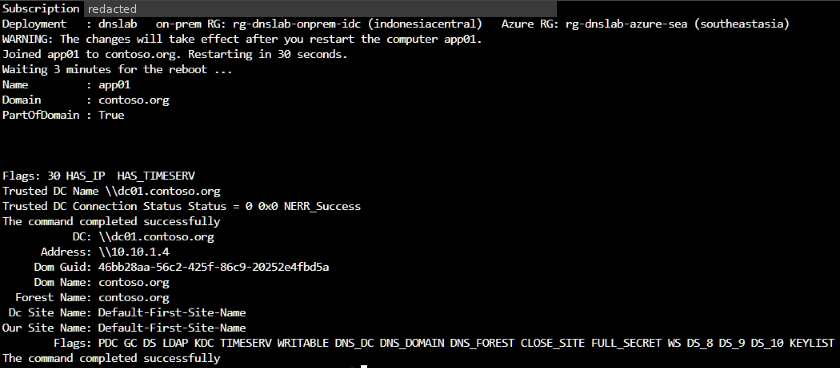
WARNING: The changes will take effect after you restart the computer app01.
Joined app01 to contoso.org. Restarting in 30 seconds.
Waiting 3 minutes for the reboot ...
Name : app01
Domain : contoso.org
PartOfDomain : True
Flags: 30 HAS_IP HAS_TIMESERV
Trusted DC Name \\dc01.contoso.org
Trusted DC Connection Status Status = 0 0x0 NERR_Success
The command completed successfully
DC: \\dc01.contoso.org
Address: \\10.10.1.4
Dom Guid: 46bb28aa-56c2-425f-86c9-20252e4fbd5a
Dom Name: contoso.org
Forest Name: contoso.org
Dc Site Name: Default-First-Site-Name
Our Site Name: Default-First-Site-Name
Flags: PDC GC DS LDAP KDC TIMESERV WRITABLE DNS_DC DNS_DOMAIN DNS_FOREST CLOSE_SITE FULL_SECRET WS DS_8 DS_9 DS_10 KEYLIST
The command completed successfullyObserve: resolver metrics
Azure Monitor publishes Queries Per Second for the resolver (REST name QPSMdm, 1-minute grain), which can be split by EndpointArmResourceId (the portal shows this dimension as EndpointId), so the test traffic of steps 10-12 shows up per endpoint. The older QPS metric is marked deprecated. The outbound endpoint only carries queries that match a ruleset rule, here the AD names, so its line is much lower than the inbound one.
# Portal: dnspr-hub-sea > Monitoring > Metrics > Metric: Queries Per Second (Sum) > Apply splitting: EndpointId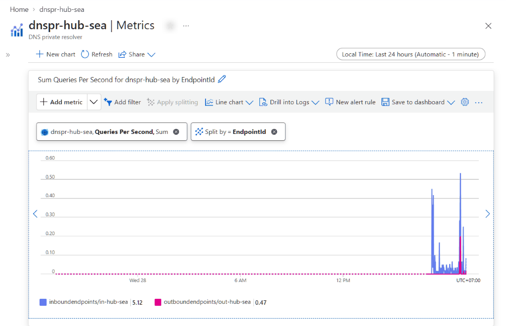
Chart: Sum Queries Per Second for dnspr-hub-sea by EndpointId (local time, last 24 hours) inboundendpoints/in-hub-sea 5.12 outboundendpoints/out-hub-sea 0.47
Results
| Test | From | Result | Status |
|---|---|---|---|
| Bicep deployment, both regions (31 resources) | Cloud Shell | Succeeded: on-prem module 26 min, Azure module 23 min | PASS |
| Site-to-site VPN | Azure | cn-hub-to-onprem and cn-onprem-to-hub Connected (IPsec, IKEv2) | PASS |
| Promote dc01 (contoso.org + contoso.com) | Run Command | Install-ADDSForest Success; 3 AD-integrated zones; forwarder 168.63.129.16 (5 s) | PASS |
| On-prem → Private Endpoint, no forwarder | dc01 | 20.150.28.100 (public), as expected | BASELINE |
| On-prem → Private Endpoint, Option A: privatelink.blob.core.windows.net → 10.20.0.4 | dc01 | 20.150.28.100 (public): private IP not returned | FAIL |
| On-prem → Private Endpoint, Option B: blob.core.windows.net → 10.20.0.4 | dc01 | 10.21.2.4 (Private Endpoint) | PASS |
| Azure → AD names through the ruleset | app01 (DNS 10.20.0.4) | dc01 10.10.1.4, intranet 10.10.1.50, portal.contoso.com 10.10.1.60 | PASS |
| DC locator: _ldap._tcp.dc._msdcs.contoso.org | app01 | SRV dc01.contoso.org:389; nltest /dsgetdc found dc01 (10.10.1.4) | PASS |
| Azure → Private Endpoint | app01 | 10.21.2.4 via the privatelink CNAME | PASS |
| Internet name | app01 | www.microsoft.com 23.41.38.100 | PASS |
| AD ports over the VPN (TCP 53, 88, 389, 445) | app01 → dc01 | All True | PASS |
| Domain join and secure channel | app01 | PartOfDomain True; nltest /sc_query NERR_Success | PASS |
| Resolver metrics | Azure Monitor | Queries Per Second split by endpoint: traffic on in-hub-sea and out-hub-sea | PASS |
What the real run showed
- Azure → AD works through the resolver. From the spoke (DNS = inbound endpoint 10.20.0.4), contoso.org, contoso.com and the
_msdcsSRV record were answered by dc01 across the VPN through the ruleset, the DC locator found dc01, and the VM joined the domain (secure channel NERR_Success). - Private Endpoints resolve from both sides. The spoke got 10.21.2.4 through the hub-linked private DNS zone. From on-prem, only the public-zone conditional forwarder (Option B,
blob.core.windows.net→ 10.20.0.4) returned the private IP. Theprivatelinkforwarder (Option A) returned the public IP in this lab: plan to forward the public zones, as Microsoft Learn recommends, and test your own forwarder chain in the PoC. - VM size check:
NotAvailableForSubscriptionfor Standard_D2s_v5 in Southeast Asia applied to zone 1 only. Regional VMs were unaffected; the pre-flight script now treats only Location restrictions as blocking. - Expected warning: AD DS promotion warns that the NIC has no static IP. Microsoft Learn says it can be ignored on Azure, where the IP is static on the NIC.
- Cloud Shell is ephemeral: a reset session loses
~/.dnslab. The deployment kept running in Azure; step 9 now re-applies the admin password before promotion, and98-reset-domain-admin.shcovers a reset after promotion. - Metrics: the portal lists Inbound/Outbound Endpoint Count and Queries Per Second (plus the deprecated QPS), matching the Azure Monitor reference; the split dimension is shown as EndpointId.
Clean up
Deletes both resource groups and everything in them.
#!/usr/bin/env bash
# Cleanup: delete both resource groups (the VPN gateways and resolver endpoints bill by the hour).
source ./00-variables.sh
az group delete -n "$RG_AZ" --yes --no-wait
az group delete -n "$RG_ONP" --yes --no-wait
az deployment sub delete -n "$DEPLOYMENT" --no-wait 2>/dev/null
echo "Deletion started (about 15-20 minutes). Remove $HOME/.dnslab afterwards."Troubleshooting
| Symptom | Check |
|---|---|
| VPN connection stays "Connecting" | Make sure both connections use the same shared key, each local network gateway has the other side's public IP, and the prefixes are right. On-prem must list 10.20.0.0/16 and 10.21.0.0/16. Wait 3-5 minutes and check again. |
| Spoke cannot resolve contoso.org | Check that the spoke VNet DNS is 10.20.0.4 (and the VM has restarted since it changed), the ruleset is linked to vnet-hub-sea, both VPN connections are Connected, and the on-prem local network gateway lists 10.20.0.0/16 so replies to the outbound endpoint (10.20.0.16/28) return through the tunnel. |
| On-prem gets the public IP for the storage account | This is what Option A (forwarding the privatelink zone) returned in this lab. Forward the public zone (for example blob.core.windows.net) to the inbound endpoint instead, as Microsoft Learn recommends, then run Clear-DnsServerCache and test again. |
| Run Command returns nothing | The subnet needs outbound HTTPS. This lab uses default outbound access on the VM subnets. Run Command also keeps only the last 4,096 bytes of output. |
| Cloud Shell session was reset (files and ~/.dnslab gone) | The deployment and Run Command keep running in Azure. Clone the repo again and continue: a new ~/.dnslab is generated. Before step 9, 04-promote-dc.sh re-applies the new password to dc01. After step 9, run 98-reset-domain-admin.sh first (VMAccess does not support domain controllers, so it resets the domain password with Run Command). |
| Pre-flight says the VM size is not available | Look at the restriction type with az vm list-skus: a Zone restriction (for example NotAvailableForSubscription in zone 1) does not block the lab VMs, which are regional. Only a Location restriction does; then export VM_SIZE=<size>. |
| Domain join fails while DNS works | Check TCP 88, 389 and 445 to 10.10.1.4 (step 11 output) and the clock skew. The credential is CONTOSO\labadmin with the password in ~/.dnslab; if Cloud Shell was reset after step 9, run 98-reset-domain-admin.sh first. |
References
- What is Azure DNS Private Resolver?
- Endpoints and rulesets
- Private resolver architecture
- Resolve Azure and on-premises domains
- az dns-resolver (CLI reference)
- Site-to-site VPN with Azure CLI
- VPN Gateway SKU consolidation (AZ SKUs)
- VPN Gateway FAQ (custom DNS, private DNS zones)
- az network vnet peering
- Private endpoint DNS zone values
- Private endpoint DNS integration
- Fallback to internet for Private DNS zones
- Name resolution for resources in Azure VNets
- Manage a virtual network (DNS servers)
- Run scripts with Run Command
- Default outbound access
- Deploy AD DS on Azure VMs
- Extend AD DS to Azure (Architecture Center)
- Add-DnsServerConditionalForwarderZone
- Supported metrics for Microsoft.Network/dnsResolvers
- Azure DNS pricing
- VPN Gateway pricing
Every script is in /scripts. Page built 28 Oct 2026.